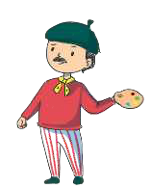
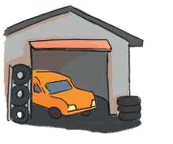
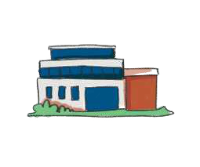
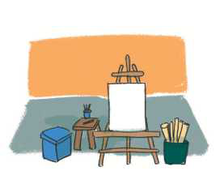

TEMATIKA 2: KARRIERA IME2. Nëna e Dritës është mjeke
Puno në shtëpi
Ndihmë: si të punoj?
Zgjidh një kartë, pastaj zgjidh vendin ku duhet të shkojë. Për ta hequr kartën, zgjidhe përsëri. Kur të mbarosh, shtyp butonin “Dërgo”.
1.
Lidh secilin person me vendin ku punon.
Mjeku
Punëtori i ndërtimit
Polici
Mekaniku

Piktori
AutogarazhiSpitali

Stacioni i policisë
Atelieja e pikturësKantieri i ndërtimit
Trego ç’punë kryejnë ata.